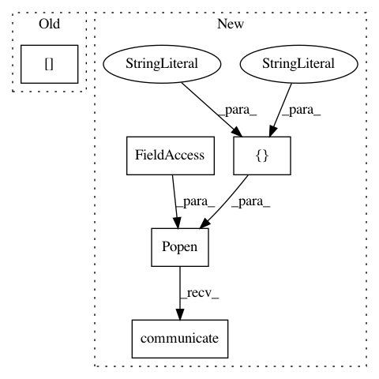

7ad870c4ffec3471112f32da4f62a371fe3df28d,homeassistant/components/media_player/samsungtv.py,SamsungTVDevice,update,#SamsungTVDevice#,123
Before Change
Update state of device.
try:
sock = socket.socket(socket.AF_INET, socket.SOCK_STREAM)
sock.settimeout(self._config[CONF_TIMEOUT])
sock.connect((self._config["host"], self._config["port"]))
self._state = STATE_ON
except socket.error:
After Change
if sys.platform == "win32":
_ping_cmd = ["ping", "-n 1", "-w", "1000", self._config["host"]]
else:
_ping_cmd = ["ping", "-n", "-q", "-c1", "-W1",
self._config["host"]]
ping = subprocess.Popen(
_ping_cmd,
stdout=subprocess.PIPE, stderr=subprocess.DEVNULL)
try:
ping.communicate()
self._state = STATE_ON if ping.returncode == 0 else STATE_OFF
except subprocess.CalledProcessError:
self._state = STATE_OFF
In pattern: SUPERPATTERN
Frequency: 3
Non-data size: 5
Instances
Project Name: home-assistant/home-assistant
Commit Name: 7ad870c4ffec3471112f32da4f62a371fe3df28d
Time: 2018-01-29
Author: magnusknutas@gmail.com
File Name: homeassistant/components/media_player/samsungtv.py
Class Name: SamsungTVDevice
Method Name: update
Project Name: NifTK/NiftyNet
Commit Name: aa495c2ace9444aa5028f699ae62dddef45ab7d9
Time: 2017-06-15
Author: wenqi.li@ucl.ac.uk
File Name: testing/get_gpu_index.py
Class Name:
Method Name:
Project Name: NifTK/NiftyNet
Commit Name: 0a3c1aa4d67cb9c49f22a87bef180c07dfafec8a
Time: 2017-06-16
Author: wenqi.li@ucl.ac.uk
File Name: testing/get_gpu_index.py
Class Name:
Method Name: